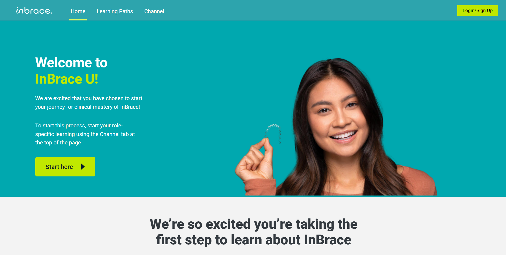
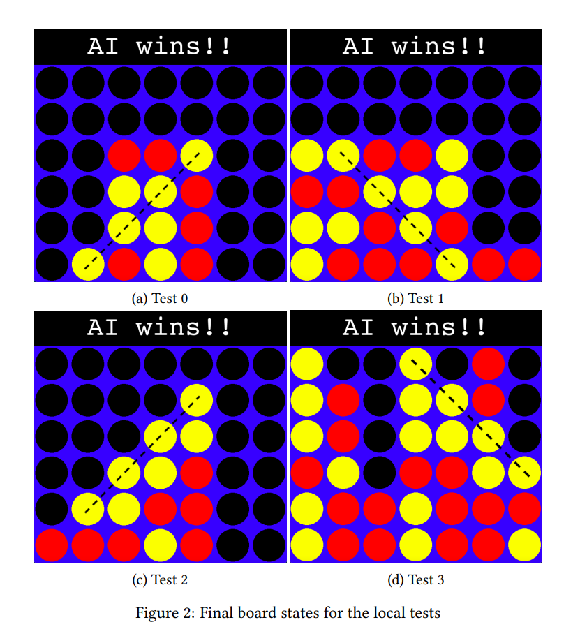
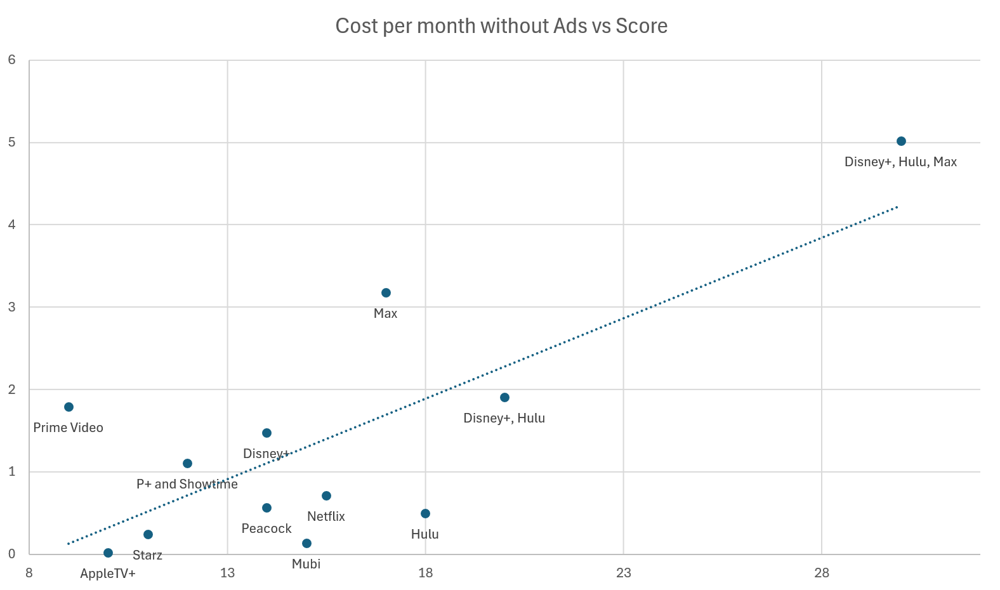
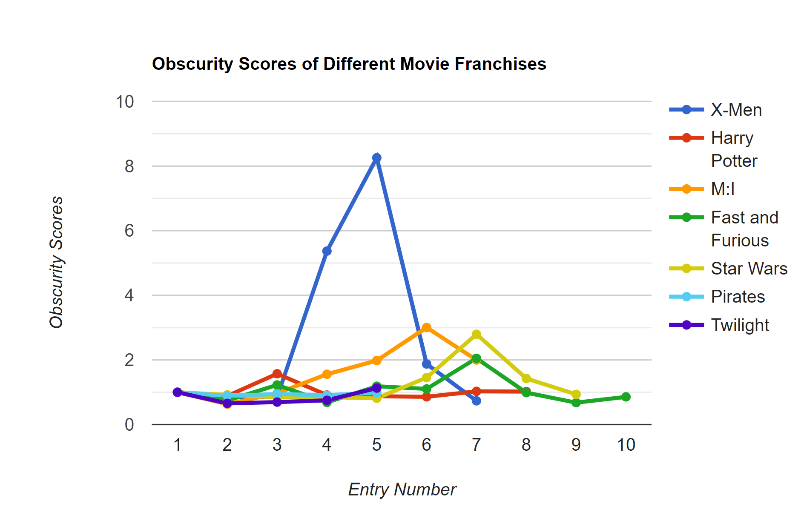
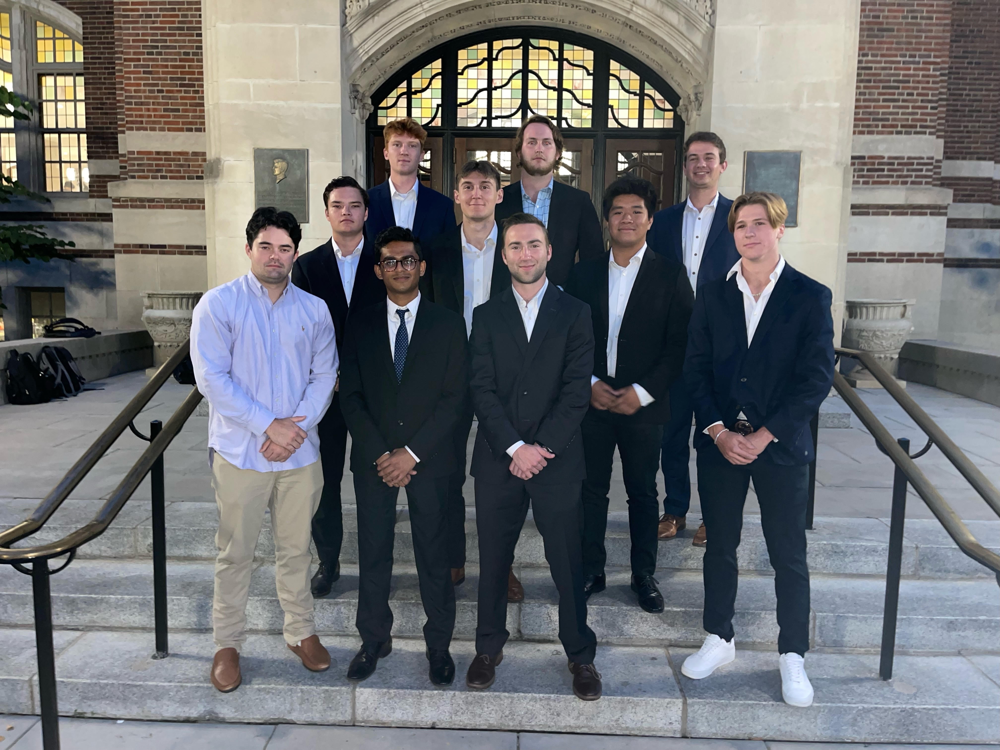
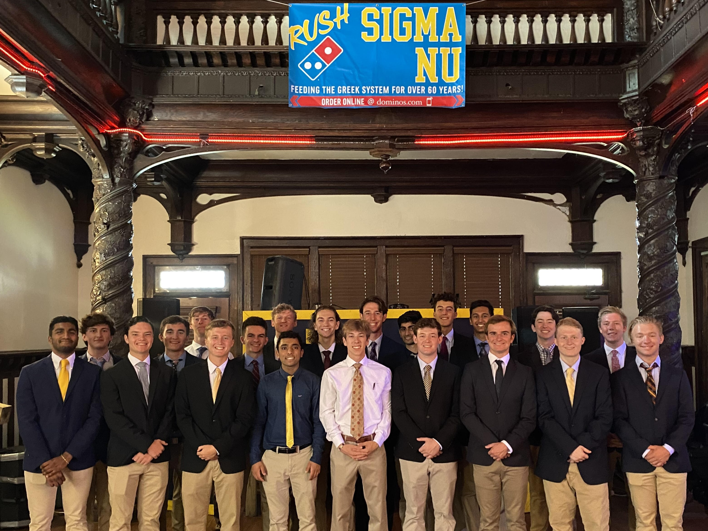

About Me
Hello! I'm Riley Aust, a Computer Science graduate from the University of Michigan, Ann Arbor, Class of 2024. I am looking for a full time position working in a data analyst role and have created this website to display my experiences and passion to join the workforce.
Professional Experience
Project Management Intern at InBrace
For a summer internship, I mediated communication between Raven 360 Consulting and InBrace to prepare Learning.InBrace.com launch. I beta tested, piloted, and launched InBrace.Learning.com for 450+ internal/external users. Additionally, I was responsible for managing all data related to the site to ensure collection and automation of previously manual processes. I presented the launch plan to executives and VPs to gain buy-in and approvals, identified software-related issues during the pilot, and created SOPs for Inside Sales, Training, and Clinical education to create enduring processes.
Academic Experience
B.S. Computer Science | University of Michigan, Ann Arbor | 2020 - 2024 | 3.3 GPA
Coding Languages Proficient In: C++, Python, SQL, R, Java, JavaScript
Classes Taken: Intro to A.I., Database Management Systems, Information Retrieval and Web Search, Software Engineering, Intro to Computer Organization, Data Structures and Algorithms, Discrete Math
Other Subjects: Multivariable and Vector Calculus, Calculus II, Statistics and Data Analysis, Intro to Astrophysics, Psychology as a Natural Science, Cognitive Psychology, 4 Semesters of Italian Language
Projects
Creating a Social Media Database in SQL
One project I worked on in my database class required designing and implementing a relational database for social media platform. The project involved creating an ER Diagram based on the platform's business rules, developing SQL scripts to create and drop tables, and writing sequences and triggers to enforce complex constraints. We then populated the database with data from a provided public dataset using SQL DML statements, ensuring data integrity through validation. Additionally, I created views to represent the data in specific formats, matching the schema of the external dataset. Through this project, I learned to translate business rules into database design, implement SQL DDL and DML commands, and ensure data integrity and accurate representation with views.

Using MiniMax for Game AI
I developed a Tic-Tac-Toe and Connect-4 A.I. using Python, focusing on implementing the minimax algorithm with alpha-beta pruning. I began by setting up the development environment, installing necessary libraries such as numpy and pygame. The core task was to complete the minimax function in Agent.py, ensuring it could predict optimal moves efficiently for both games. Testing involved running provided test cases and verifying the AI's performance using both terminal outputs for TTT and visual simulations for C4. Through this project, I deepened my understanding of game theory, algorithm optimization, and practical application of Python for AI development.
What streaming service is the best deal?
According to Forbes, 99% of US households subscribe to a streaming service. Whether that be Netflx, Hulu, Max, or another one of the many that now exist on the market, Americans are careful about which ones they select. Outside of picking the ones which have the exclusives you specifically want to see, I believe brand recognition is the driving part of why some are more popular than others. This is what made me curious to see what sevice actually was the best in relation to their costs per month for with ads and without. In order to quantify the quality of a streaming service in relation to its movie selections, I used a variety of lists on Letterboxd that I thought would encompass all aspects when having a great movie library.
The services I decided to test included Netflix, Prime Video, Disney+, Max, Paramount+, Hulu, Peacock, AppleTV+, Starz, Tubi and Mubi. Despite being the most popular streaming service, Netflix ranked 7th, behind ones such as Paramount+. The only categories Netflix placed in the top three in were total films and 500 most watched films. Netflix also had the third most amount of bottom 250 films, which I used as a negative factor in my scoring equation.
Max on the other hand, Max preformed amazingly. It finsihed first in total films from 4 of the 6 lists I selected from, with it only being in fifth place for total number of films. This led me to also study the bundles for which Max is apart of, which combines it with Disney+ and Hulu. When adding these bundles as their own individual services to the data set, they preformed the best and had the highest score of service. This was despite Hulu originally coming in as ninth best because of the great price you can get all three for $16.99 with ads and $29.99 without.
The original reason why I tested this was because of a service called Tubi, which unlike all the other ones I tested, is free. Despite this, Tubi finished in second only behind Max due its large library and huge amount of older content as well. This project was not only to show the best value for all the popular services, but to also show that many of the free ones such as Tubi are quite impressive as well. I understand this is not a comprehensive analysis, as this does not consider the value of exclusives or TV shows as whole, which would have benefited Hulu for example, which was ranked in the lower half.
Download Streaming Cost Analysis Excel Sheet
Why "X-Men: Days of Future Past" is a Statistical Anomaly on Letterboxd
I have a large passion for film and with that, I use the app Letterboxd to often find new movies to watch. One great feature of the app is the way in which statistics about total watches and ratings are collected across all users. This made me curious to find that "X-Men: Days of Future Past", despite being the 5th entry and debuting 14 years after the original, is the most viewed entry in the "X-Men" franchise.
This led to me creating my own statistic to measure this kind of anomaly that was found in the X-Men franchise. The way in which I created this obscurity score was by this equation:
number of viewers / expected viewers * entry number / relative viewership rank
RVR is the ranking of the movie in relation to the ones released up to that point. I did it like this because I would expect that each entry in a franchise would have fewer views than the one before it. For example, "X2" has 708k viewers with an expected value of 824k and an entry number of 2 and a relative rank of 2 as well, giving it a very normal score of 0.859. I also calculated the expected value by taking the average in difference in views between each entry.
If you are interested in all of the data, here is a link to download the Excel sheet I used for the calculations.
Download Franchise Outliers Excel Sheet
Serious Game Development
During my study abroad course in Summer 2022, I developed a serious game from scratch in Unity with 2 other students. Throughout the course, we were taught by Benno Lüders, a game developer from Germany, who showed us not only the technical aspects of creating a game, but how they can be used in educational settings as well. We mostly utilized Unity and C#, which were both entirely new to me when I started the course. Our final project was a racing game that highlighted the dangers of driving under the influnece. We programed it so the speed and handles would be correlated with the amount of drinks the user selected beforehand, which was supposed to have a similar effect seen in impairment goggles. This project enhanced my skills in game development, team collaboration, and programming in Unity which is a standard in the gaming industry.
Extracurricular Activities
Interfraternity Council
I was elected a member of the executive board for two years to the roles of President and Vice President of Social Responsibility. As VPSR, I ensured the safety of social events by leading the SRC committee of 40+ individuals which was responsible for upholding the social policy. I also coordinated and ran two Social Responsibility Meetings in which more than two hundred people attended each, for which I was the point person for ensuring guest speakers and attedance from all chapters. In my next role as President, I leveraged my previous experience on the board as I oversaw the operations of 1,400 members across 19 chapters. In that time period, I led meetings on a weekly basis of the executive board and general council meetings where I was responsible for creating agendas and delegating tasks.
Sigma Nu Fraternity
A member all four years, I held many roles and was a key member of many committees. During my time as a member, I saw the chapter size increase 210% and helped raise over $650,00+ for charity. As Social Chair, I was elected to the executive board and ran my own committee as a freshman where I was in charge of all internal and external events along with managing a budget. I also assisted the Treasure in many different aspects such as help organize each semester's budget meeting along with managing $40,000 across many different comittees. Outside of those roles, I have also been a member of the PR and risk reduction committees.
Contact Information
- 62 Balboa Coves, Newport Beach, California 92663
- 949-375-2054
- aust.riley@gmail.com LinkedIn